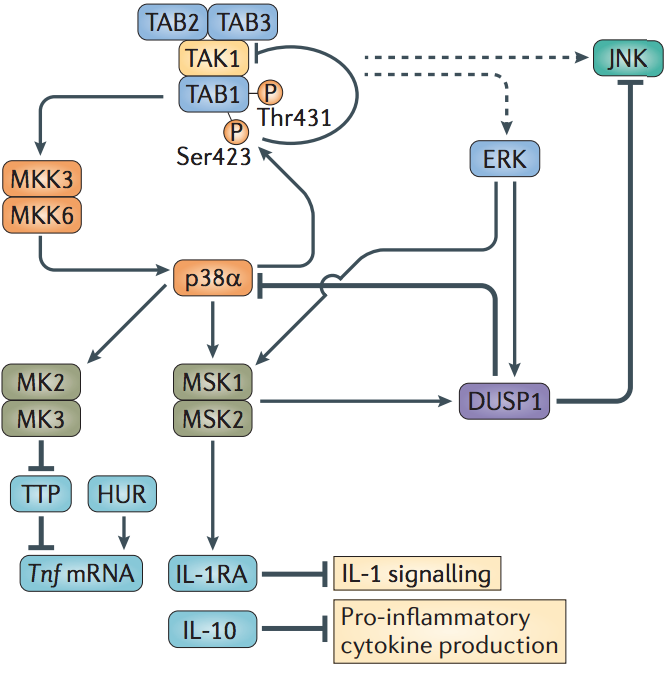
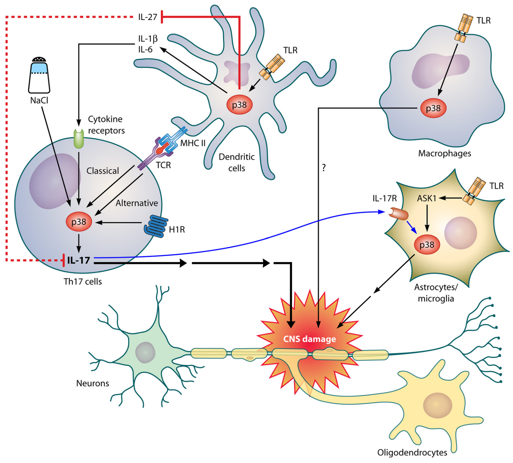

MAPK Signaling Pathway
Christopher Wetherill
TBMH 5054
Mitogen-Activated Protein Kinase
- Ubiquitous and highly evolutionarily conserved signaling pathways
- Enable coordinated, integrated responses to diverse stimuli
- Hormones
- Growth factors
- Cytokines
- TGF-β-related agents
- PAMPs, DAMPs
- Orchestrate gene transcription, protein biosynthesis, cell cycle control, apoptosis, differentiation
doi: 10.1152/physrev.00028.2011
ERK, JNK, and P38 MAPK Core Pathways
ERK, JNK, and P38 MAPK Core Pathways
- Extracellular signal-regulated kinases (ERKs)
- Effectors for mitogen signaling
- Can be activated independently of Ras protooncoprotein
- Also activated by TNF-family cytokines, PAMPs, DAMPS
- c-Jun NH2-terminal kinases (JNKs)
- Activated by mitogens, various environmental stressors
- p38 MAPK
- p38α–δ all preferentially activated by environmental stresses, inflammatory cytokines, PAMPs, DAMPs
doi: 10.1152/physrev.00028.2011
MAPK Cascades
doi: 10.1038/nri3495
Activation of MAPKs
doi: 10.1038/nri3495
JNKs in Myeloid Cells
- Widely expressed, though function in immunity difficult to investigate
- Global Jnk1 and Jnk2 deletion results in embryonic lethality
- Myeloid cell-specific deletion of JNK1 and JNK2 decreases expression of macrophage-specific genes
- Likely pro-inflammatory role in macrophages
- JNK inhibition could be therapeutic in inflammatory disease
doi: 10.1038/nri3495
JNKs and MAP Kinase Kinase Kinase (MAP3K/MEKK)
doi: 10.1152/physrev.00028.2011
ERK1 and ERK2
- Shown to regulate cytokine production in macrophages
- Inhibition of downstream activation by TLP2 KO shows
- Upregulation of TNF, IL-1β, IL-10
- Downregulation of IL-12, IFNβ, iNOS
- TLP2 also functions in ERK-independent pathways to regulate TNF production
doi: 10.1038/nri3495
p38 MAPKs
- p38α inhibition (conditional Mapk14 deletion) reduces TLR-mediated induction of TNF
- p38β inhibition has little effect on TLR-induced cytokine production
- p38α also has cell type-specific rolls, e.g.,
- Signaling in myeloid cells decreased UVB-induced skin inflammation; whereas
- Signaling in epithelial cells increases UVB-induces inflammation
- Originally thought to be pro-inflammatory, p38α also involved in various negative feedback loops
doi: 10.1038/nri3495
p38α Negative Feedback

doi: 10.1038/nri3495
MAPKs and Immunity
doi: 10.1152/physrev.00028.2011
MAPKs and Immunity
doi: 10.1152/physrev.00028.2011
MAPKs in Chronic Disease
- JNKs implicated in both pro- and antioncogenic mechanisms
- Also implicated in type 2 diabetes
- High-fat diets seen to recruit myeloid cells to adipose tissue
- Activate JNK pathways that inhibit anti-insulin resistance functions
- p38 implicated in
- Multiple sclerosis
- Inflammatory bowel disease
- Asthma and COPD
MAPK Modulation by Pathogens
| Pathogen |
Disease |
Protein |
Target |
Effect |
| M. tuberculosis |
Tuberculosis |
Eis |
DUSP16 |
Inactivation of JNK |
| M. tuberculosis |
Tuberculosis |
MptpB |
ERK1, ERK2, p38 |
Decreases ERK phosphorylation in cells |
| V. parahaemolyticus |
Gastroenteritis |
VopA |
MKKs |
Blocks ATP binding to MKKs |
| Yersinia spp. |
Plague, yersiniosis |
YopJ |
MKKs |
Blocks kinase activity |
| S. enterica |
Gastroenteritis |
AvrA |
MKKs |
Blocks kinase activity |
| S. enterica |
Gastroenteritis |
SpvC |
ERKs |
Irreversibly inhibits kinase activity |
| S. flexneri |
Dysentery |
OspF |
ERKs |
Irreversibly inhibits kinase activity |
| B. anthracis |
Anthrax |
Lethal toxin |
MKKs |
Reduces ability to activate MAPKs |
| L. major |
Leishmaniasis |
GP63 |
TAB1 |
Decreased TAK1 activity |
doi: 10.1038/nri3495
References
Chung, K. (2010). p38 mitogen-activated protein kinase pathways in asthma and COPD. Chest, 139, 1470 – 1479. doi: 10.1378/chest.10-1914
Feng, Y., & Li, Y. (2011). The role ofp38 mitogen-activated protein kinase in the pathogenesis of inflammatory bowel disease. Journal of Digestive Diseases, 12, 327 – 332. doi: 10.1111/j.1751-2980.2011.00525.x
Krementsov, D., Thornton, T., Teuscher, C., & Rincon, M. (2013). The emerging role of p38 mitogen-activated protein kinase in multiple sclerosis and its models. Molecular and Cellular Biology, 33, 3728 – 3734. doi: 10.1128/MCB.00688-13
Kyriakis, J., & Avruch, J. (2011). Mammalian MAPK signal transduction pathways activated by stress and inflammation: A 10-year update. Physiological Reviews, 92, 698 – 737. doi: 10.1152/physrev.00028.2011
Simon, J., Arthur, C., & Ley, S. (2013). Mitogen-activated protein kinases in innate immunity. Nature Reviews Immunolovy, 13, 679 – 692. doi: 10.1038/nri3495
Yang, Y., Kim, S., Yu, T., Yi, Y., Rhee, M., Sung, G., et al. (2014). Functional roles of p38 mitogen-activated protein kinase in macrophage-mediated inflammatory responses. Mediators of Inflammation, 2014. doi: 10.1155/2014/352371
MAPKs in Cancer
doi: 10.1152/physrev.00028.2011
MAPKs in Diabetes
doi: 10.1152/physrev.00028.2011
MAPKs in Multiple Sclerosis

doi: 10.1128/MCB.00688-13
MAPKs in IBD
doi: 10.1111/j.1751-2980.2011.00525.x
MAPKs in Asthma and COPD
doi: 10.1378/chest.10-1914